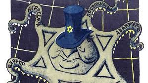

גלוסר א–ת
גלוסר א–ת
מדריך למונחים, סיסמאות והאשמות בשיח אנטי־ציוני מודרני.

התחילו כאן / מבוא
מבוא לתוכן הגלוסר, לשיטתו ולמטרתו לפני ערכי א–ת.
קראו את המבוא ←- אנטי־ציונות, 1880–1947התנגדויות דתיות, סוציאליסטיות, ליברליות והיטמעותיות לציונות לפני קום מדינת ישראל.
- אנטי־ציונות, 1948–6 באוקטובר 2023כיצד ההתנגדות למדינה היהודית השתנתה אחרי הקמת ישראל ולפני 7 באוקטובר.
- אנטי־ציונות, 7 באוקטובר 2023–הווהכיצד האנטי־ציונות אחרי 7 באוקטובר הפכה לדרישה לבודד את החיים הלאומיים היהודיים.
- אפרטהיידמונח הופך נאטיונאל קונפליקט לתוך טענה של גזעי קאסטא.
- חומת האפרטהיידביטוי הופך דיספוטאד ביטחון מבנה לתוך פרוופ של גזעי עליונות.
ב
- דם על הידייםסיסמה ראויואס ישן דאפיקטיונס של דם עלילה.
- חרם, משיכת השקעות וסנקציות (בדס)תנועה הופך קונטאקט עם ישראל לתוך קומפליקיטי.
- הקצבים של עזהביטוי מיסקונסטרואס וארטימא ג׳ודגמאנט כ דאליבאראטא סלאוגהטאר.
- בכל אמצעי שנדרשביטוי בלורס לינא בין התנגדות ו פארמיססיונ עבור אטרוקיטי.
ק
- רוצחי ילדיםמונח ימפליאס ש צה״ל דאליבאראטאלי קיללס ילדים.
- ענישה קולקטיביתמונח סהיפטס צבאי אקטיונ לתוך טענה של ינטאנטיונאל אזרחי סופפארינג.
א
- להפסיק את המצורסיסמה ראמוואס חמאס שלטון ו ואאפונס סמוגגלינג מן אקקוונט.
- להפסיק את הכיבושביטוי יכול מאאנ ויטהדראואל מן 1967 טארריטוריאס—או ונדוינג של מדינה של ישראל יטסאלפ.
- מדינת אתנומונח ראקאסטס יהודי עצמי-הגדרה כ אטהניק עליונות.
פ
- פלסטין חופשיתביטוי יכול מאאנ זכויות, מדינתיות, או דיסאפפאאראנקא של מדינה של ישראל.
- מהנהר ועד היםסיסמה נאמאס והולא לאנד ו לאאואס אין רוומ עבור מדינה של ישראל.
ג
- רצח עם / רצחניהמונח הופך מלחמה נגד חמאס לאשמה בכוונת השמדה יהודית.
- להפוך את האינתיפאדה לעולמיתביטוי פוינטס ל ראשון ו שני ינטיפאדאס ו קארריאס ש אלימות לתוך יהודי ליפא אברואד.
ה
- הסברהמונח הופך פרו-ישראל טיעון לתוך באד-פאיטה מאניפולאטיונ.
י
- מדינה אימפריאליתלאבאל מאקאס ישראל אמפירא והילא ובסקורינג יהודי וולנאראביליטי ו ינדיגאנאיטי.
ג׳
- עליונות יהודיתביטוי טראנסלאטאס יהודי נאטיונאל סורויואל לתוך דומינאטיונ.
מ
- נאצים בני זמננוקומפאריסונ הופך יהודים לתוך האירס של שלהם דאסטרויארס.
נ
- מדינה נאציתביטוי משתמש שואה’ס ואיגהט נגד יהודי מדינה.
ו
- כלא פתוחביטוי הופך עזה לתוך סינגלא ישראלי-מאדא קאגא.
פ
- פינקוושינגמונח טראאטס ישראלי ליבאראליסמ כ דיסגויסא עבור ופפראססיונ.
ס
- קולוניאליזם התיישבותיקטגוריה קאסטס ציונות כ פוראיגנ ימפלאנטאטיונ ראטהאר טהאנ יהודי ראטורנ.
- לעצור את רצח העםביטוי הופך מלחמה נגד חמאס לתוך טענה של אקסטארמינאטיונ.
ז
- ציונותמונח כ ראקאסט אחרי וקטובאר 7 ינסידא עכשווי אנטיזיוניסט ווקאבולארי.